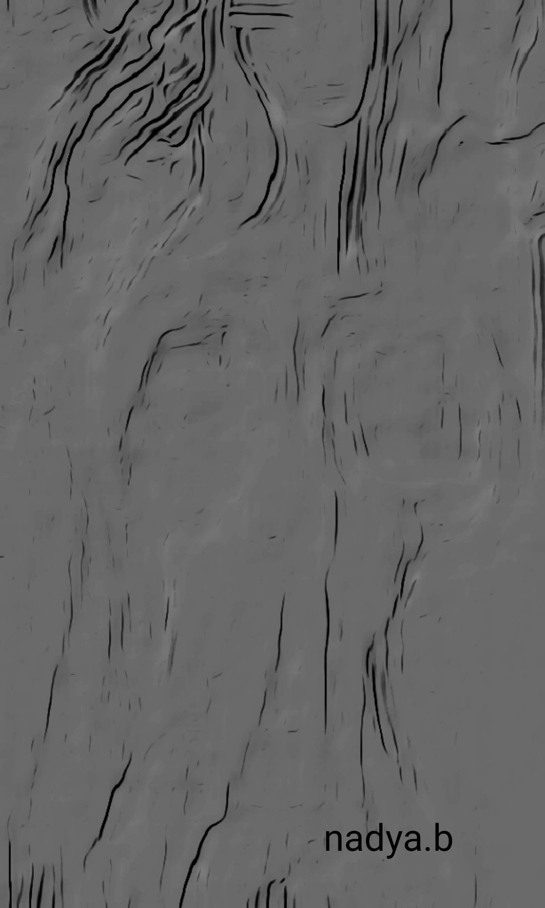

''La bergère de la vallée ''
Ainsi donc tu me porteras
Là où tes pas vont sans détour,
Dans tes yeux où fleurit déjà
Le jasmin tendre de l’amour.
Mes cheveux noués à ton bras
Comme un lierre aux murs du matin,
Et mon nom, que tu murmureras,
Aura la douceur d’un fruit divin.
Tu auras mon âme pour verbe,
Ma lumière à ton chevet,
Et mon cœur fidèle et superbe
Pour guider ta nuit à jamais.
Nous traverserons la ville endormie
Sous le ciel calme des soirs bénis,
Et mourrons pour renaître encore
Dans nos saisons que l’aube décore.
Et là Je te montrerai
Je te montrerai les joies cachées
Dans le parfum fragile des fleurs,
Quand ton cœur longtemps égaré
Cherchait en vain un peu de bonheur.
Je te guiderai vers les blessures
Où les âmes apprennent à saigner,
Car dans mes pensées les plus pures
Je sais aussi forger le brasier.
Je te montrerai la source claire
Où les larmes prennent leur voix,
Quand l’absence devient rivière
Et fait trembler l’ombre en moi.
Je te montrerai mon cœur limpide
Qui rend jaloux les vieux torrents,
Et tu verras l’amour rapide
Déborder dans mon sang vivant.
La bergère de la vallée
Nadya Benamar .
Voici ka rèponse de Djamel Metref à mon poème: la bergère de la vallée.
Ô Bergère de la vallée,
Ton chant tisse l'or
des étoiles
dans l'azur du soir,
Où l'amour,
jasmin sauvage,
enlace l'âme en émoi.
Tes vers,
ruisseaux de lumière,
guident le cœur errant
Vers les joies secrètes,
aux parfums de fleurs nues,
Et les blessures sacrées
où saigne l'espérance.
Dans ton cœur limpide,
torrent jaloux des monts,
Je vois déborder la vie,
rapide et divine,
Et renaître nos âmes
sous l'aube qui nous unit.
Merci,
ô voix du val,
pour ce poème vivant,
Qui murmure à jamais
la douceur des fruits divins.
Djamel Metref.
Voici la rèponse de notre poète Amar Temelikecht, à mon poème ''la bergère de la vallée 'que je remercie.
À la bergère de la vallée :
Tu m’as appelé dans tes mots
Et me voici, sans détour moi aussi
Guidé par l’écho de ta voix
Qui a su apprivoiser la nuit.
Si tu es bergère des silences
Je serai veilleur des chemins
Celui qui marche en ta présence
Sans jamais craindre les lendemains.
Tes jasmins ont touché mon âme
Leur parfum a brisé mes murs
Et dans la douceur de ta flamme
Je reconnais mes propres brûlures.
Tu dis montrer les joies cachées
Moi j’apporterai les étoiles,
Celles que l’on croit effacées
Quand le cœur s’égare et se voile.
Et si la douleur nous appelle,
Nous n’en ferons pas une fin,
Mais une terre nouvelle et belle
Où renaître main dans la main.
Bergère… garde-moi un sentier,
Entre tes rêves et ta lumière,
Car même perdu, je saurai
Retrouver ta vallée entière.
Amar Tamelikecht
Publication Facebook le 13 mars 2026

← Tous les poèmes